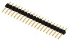
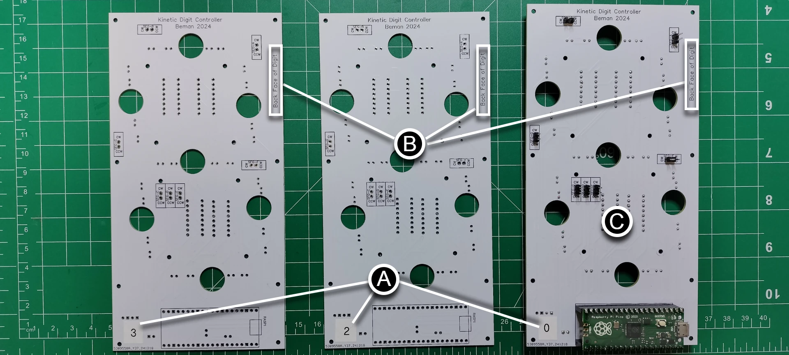
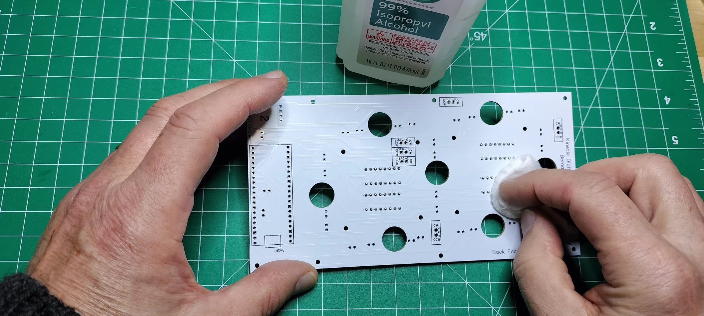
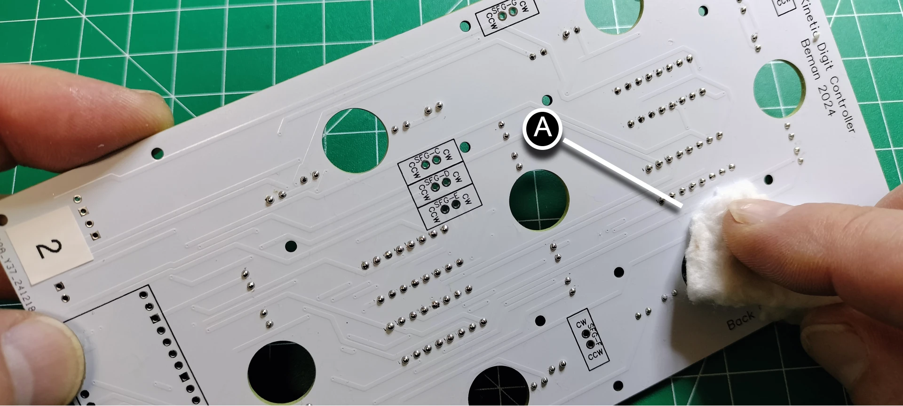
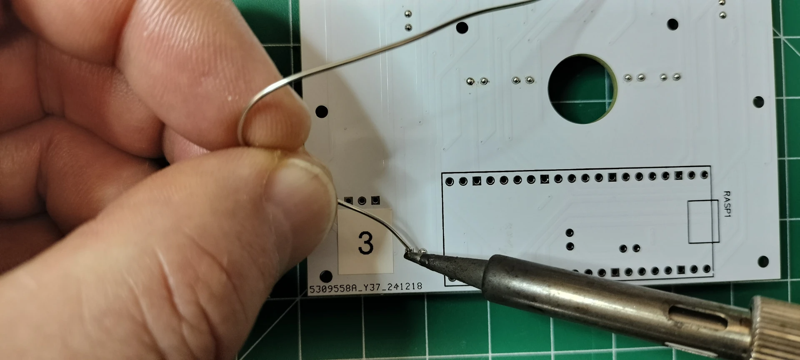
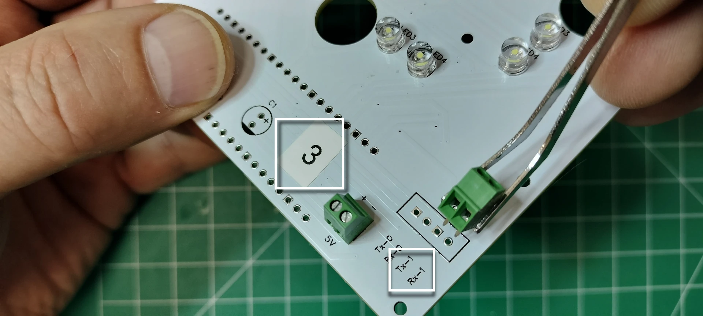
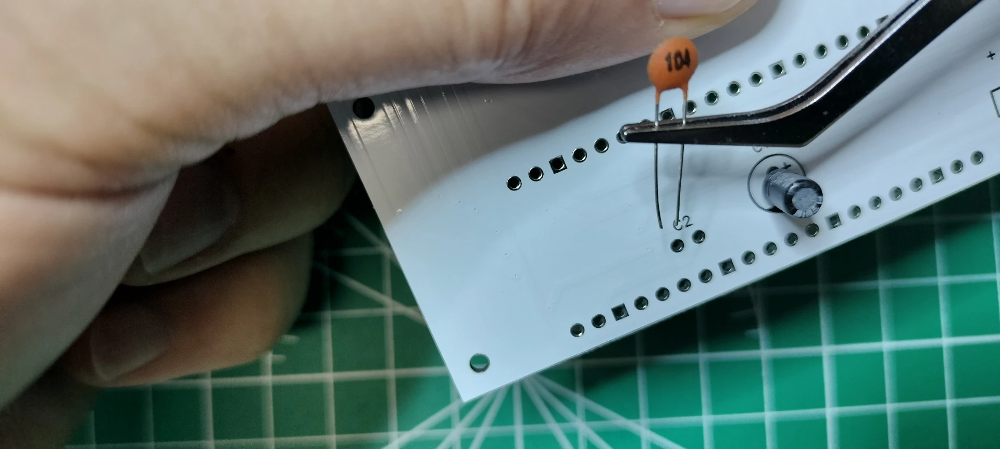
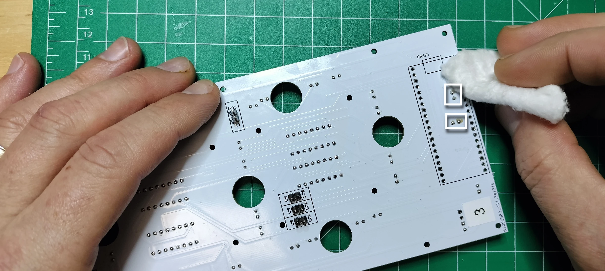

Digit PCB Assembly¶
The display has 4 digits. The digits are numbered from right to left, 0-3, when looking at the front of display. The digit PCBs are digits 0, 2, and 3 whereas the controller PCB is digit 1 and includes the colons. The digit PCBs are the foundation of the display and serve several important functions:
- provides a mechanical backstop to the actuator's segment when retracting into the display
- provides a consistent distance of dispersion for the lighting of the segment, giving each segment a uniform glow rather than spots of light
- provides the traditional role of reducing the wiring, efficiently connects various electronic component minimizing the overall size, reliable, cost-effective, and consistent quality of the circuitry
This section details the assembly of the digit PCBs. Note the pictures below showing the fully assembled PCBs that will be covered in this section.
Front face fully assembled.
Back face fully assembled.

Prerequisites¶
- Fabrication of the digit PCBs
- Table of components and tools
Table of components
| Quantity | Component | Image |
|---|---|---|
| 4 | 16 pin IC socket |  |
| 4 | L293D stepper motor driver |  |
| 2 | 20 pin female header connector |  |
| 1 | 20 pin single row breakaway male connector |  |
| 2 | 2 Pin PCB Mount Screw Terminal Block Connector Straight Pin |  |
| 1 | 0.1μ farad ceramic capacitor |  |
| 1 | 1μ farad electrolytic capacitor |  |
| 28 | 5mm Flat top LED, anode long lead (any color) |  |
| 1 | Raspberry Pi Pico 2040 with Headers |  |
| 3 | Digit PCBs | See labelling the digit PCBs |
Table of tools
| Required | Tool | Image |
|---|---|---|
| Yes | Soldering station |  |
| Yes | 0.8mm 1.76oz RoHS flux core solder |  |
| Yes | Mini flush cutters |  |
| Yes | Isopropyl Alcohol | |
| Yes | Cotton Facial Pads |  |
| No | Label maker |  |
Label the Digit PCB¶
- Using a label maker or piece of tape and pen, create two sets of 3 labels: "0", "2", and "3". Add the (A) label to the (B) FRONT FACING SIDE of each of the 3 digit PCBs as placed in the picture below. Also note that digit 0 (C) in the picture below is a completed digit PCB ready for mounting onto the display.

- Add the (A) label to the (B) BACK FACING SIDE of each of the 3 digit PCBs as placed in the picture below. 
Add the 16 pin headers¶
- From the front side of the digit PCB, (A) insert the 16 pin header into the through holes by aligning the notch with the digit PCB top silk layer outline of the 16 pins. The notch in the 16-pin header is used to ensure correct orientation when connecting the L293D motor driver. Carefully turn over the digit PCB while keeping the 16 pin header in the through holes.

- (A) Solder the 16 pins and repeat the previous step until all 4 of the 16 pin headers are soldered into place.

- From the back of the digit PCB, (A) cut off the soldered pins.

- Touch up the clipped pins with a small bit of solder to make (A) smooth rounded beads instead of sharp points.
- Clean up the soldered pins by removing the flux using a cotton pad dabbed with isopropyl alcohol. Repeat the previous step if you find your cotton pad is being torn from any protruding pins. 
Add the 28 LEDs¶
Note
BEFORE SOLDERING LEDS ONTO YOUR DIGIT PCB, be sure to test your LEDs on a breadboard and use a digital camera to spot any variations in color when the LEDs are lit.
Below is a photo showing the color variation of blue 5mm LEDs within the same batch using a breadboards power rail with (C) 2.63v. Note the (A) light blue LEDs and the (B) purple LEDs within the same blue batch of LEDs.

- There are seven segments "A" through "G" each with four LEDs. From the front of the digit PCB, start with segment "A" by inserting the LED's (A) long lead (anode) into the "+" through hole. Repeat the process for all segment-A LEDs.
- Carefully turn over the digit PCB and rest it with the back facing up. Solder each LED pin onto the digit PCB, then (A) snip off the excess. Touch up the clipped pins with a small bit of solder to make smooth rounded beads instead of sharp points.

- Clean the flux off with (A) a cotton pad dabbed in isopropyl alcohol. 
- Repeat the previous steps for segments B through G until all 28 LEDs are soldered onto the PCB. The picture below is the front face of the digit with all 28 LEDs soldered into place.

Add the Motor Pins¶
- Break out 7 pairs of 2.54mm male breakaway pins using needle nose pliers.

- On the back of the digit PCB, place the short end of the pin-pair into each actuator segment through hole (seg-A through seg-G).

- On the front of the digit PCB motor solder pins into place.
- Continuing on the front of the digit PCB, cut the pins flush on the pcb, then resolder the snipped pins to create smooth beads.

- Clean off the flux residue using a cotton pad dabbed in isopropyl alcohol.

Mount the Motor Drivers¶
- From the front of the digit PCB, orient the motor driver so the notch (or pin 1) is aligned with the 16 pin header.

- CAREFULLY insert the motor driver into the 16 pin header and ensure none of the pins on the motor driver are bent or protruding from the 16 pin header.

- Repeat the install for the remaining motor drivers.
Add the PCB Mount, Two pin (2P) Terminal Block Connectors¶
- On the front of the digit PCB, insert the PCB two pin terminal block connector into the 5v through holes so the face of the connector where the wires are inserted points toward the LEDs on the PCB.

- Solder the block terminal connector pins on the back of the digit PCB. 
- On the front of the digit PCB position the 2 pin terminal block connector facing away from the LEDs. For PCBs labelled "2" & "3", insert the connector pins into the
UART Tx-1/Rx-1through holes. For the digit PCB labelled "0", insert the connector into theTx-0/Rx-0through holes.  - On the back of the digit PCB, solder the remaining connector pins, cut the pins flush, resolder to a smooth bead, then remove the flux wth a cotton dabbed with isopropyl alcohol.

Add the Electrolytic and Ceramic Capacitors¶
- On the front of the digit PCB, align the electrolytic capacitor
-sign opposite the+printed on the PCB for capacitorc1, see the picture below. Insert the pins into the through holes, then turn the digit PCB over to the back side and solder the capacitor.
- On the front of the digit PCB, insert the ceramic capacitor pins into the through holes titled
c2. Turn the digit PCB over to the back and solder the capacitor.
Note
Ceramic capacitors do not have polarity and can be inserted in any direction.
 3. On the back of the digit PCB, cut the pins flush, resolder to a smooth bead, then remove the flux with a cotton dabbed with isopropyl alcohol. 
Add the 20 pin Headers and Install the Microcontroller¶
- On the back side of the PCB, place the two 20 pin headers into the through holes for
RASP1. Carefully turn over the PCB while keeping the 20 pin headers in the through holes.
- Level the PCB and adjust the two 20 pin headers so they are perpendicular to the PCB. Solder the pins once in place. Snip all 40 of the pins flush, resolder each to a smooth bead, then remove the flux with a cotton dabbed with isopropyl alcohol.

- Orient the Raspberry Pi Pico 2040 microcontroller so the USB port is facing in the same direction as the PCB silk screen, then gently mount the microcontroller onto the header.

Congratulations for assembling a digit PCB! Be sure to test the digit PCB before assembling the next one.
Digit Schematics¶
The schematic diagrams in this section represent the Digit Motor Controller and Digits Microcontroller circuits:
- Motor Controller Circuit drives the actuator motors for each segment (A-G) to physically move the segments into position, turns on the segment LEDs when extended, and turns off the segment LEDs when retracted.
- Microcontroller Circuit controls the LEDs for segment illumination (brightness) and communicates with the main controller (Raspberry Pi Pico W 2040) to receive display commands.
Together, these circuits enable the digit PCBs to display numbers and characters as part of the larger kinetic display system. Below is an explanation of the components, their purpose, and how the circuitry functions.
Digit Motor Controller Schematic¶
The schematic in the section shows the motor control circuitry for the digit's seven-segment actuators (A-G). Each segment is controlled by a motor driver IC (L293D) connected to the Raspberry Pi Pico 2040. Note the L293D IC motor driver is considered outdated, but used in this circuit as it works well with toy motors and costs slightly less. For more details see the L293D motorcontroller datasheet.
Key Motor Controller Components and Their Purpose¶
- L293D Motor Driver ICs (U1, U2, U3, U4):
Purpose: Control the bidirectional movement of the actuator motors for each segment (A-G).
Functionality: Each IC controls two segments, allowing precise movement of the actuators.
Pins:
ENABLE1andENABLE2: Controls the motor speed.INPUT1,INPUT2,INPUT3,INPUT4: Control the CW (Clockwise) and CCW (Counter clockwise) direction of the motor.OUTPUT1,OUTPUT2,OUTPUT3,OUTPUT4: Provide the output signals to the motors.
- Actuator Motors (SEG-A to SEG-G):
Purpose: Physically extends and retracts the segments of the seven-segment display to create the desired digit.
Pins:
CWextends the segment andCCWretracts the segment: Control the extension and retraction of the actuator.
- Capacitors (C1, C2):
Purpose: Provide power decoupling and noise filtering for the motor drivers.
C1(1μF): Stabilizes the power supply for the motor drivers.C2(0.1μF): Filters high-frequency noise. - GPIO Pins (from Raspberry Pi Pico 2040):
Purpose: Send control signals to the motor drivers.
Pins:
GPIO11,GPIO12,GPIO15, etc.: Control theINPUTandENABLEpins of the motor drivers.
How the Motor Controller Circuit Works¶
- Motor Control:
- The Raspberry Pi Pico 2040 sends signals to the
INPUTandENABLEpins of the L293D ICs. - Based on these signals, the motor driver controls the direction and speed of the actuator motors.
- The Raspberry Pi Pico 2040 sends signals to the
- Segment Movement:
- Each segment (A-G) is connected to a motor. The motor moves the segment into position to display the desired digit.
- Power Stabilization:
- The capacitors
C1andC2ensure stable operation of the motor drivers by filtering noise and stabilizing the power supply.
- The capacitors

Digit Microcontroller Schematic¶
The schematic in this section shows the microcontroller circuitry for controlling the LEDs and communicating with the motor controllers.
Key Microcontroller Components and Their Purpose¶
- Raspberry Pi Pico 2040 (Microcontroller):
Purpose: Acts as the central processing unit for the digit PCB.
Functions:
- Sends control signals to the motor drivers for segment movement.
- Controls the LEDs for segment illumination.
- Communicates with the main controller PCB via UART.
- LEDs (A-LED1 to G-LED4):
Purpose: Illuminates the segments of the seven-segment display.
Configuration:
- Each segment (A-G) has four LEDs connected in parallel.
- The anode
+is connected to the GPIO pins, and the cathode-is connected to ground. - Brightness is controlled by the GPIO PWM signals from the microcontroller.
- Resistors (not used in lieu of PWM): Purpose: Prevents the LEDs from exceeding their maximum rated power capabilities. The software prevents any LED PWM signal from exceeding a 220 ohm resistor for 3.3v and therefore resistors are not needed.
- UART Connector:
Purpose: Provides communication between the digit PCB and the main controller PCB.
Pins:
Rx-1,Tx-1,Rx-0,Tx-0: Used for transmitting and receiving data.
- Capacitors (C1, C2):
Purpose: Provide power decoupling and noise filtering for the microcontroller and LEDs.
C1(1μF): Stabilizes the power supply for the LEDs.C2(0.1μF): Filters high-frequency noise.
How the Microcontroller Circuit Works¶
- Segment Control:
- The Raspberry Pi Pico 2040 controls motor direction, extending or retracting the segment, and speed from GPIO pins connected to the motor controllers.
- The microcontroller determines the length of time the motor is running (between 1/5th and 1/4th of a second), the CW (extend) or CCW (retract) direction of the actuator, and the speed of the motor which is a value typically between 50% to 100% of 5v.
- LED Control:
- The Raspberry Pi Pico 2040 controls the LEDs by PWM from the GPIO pins that are connected to the anode of each LED.
- This allows the microcontroller to turn on/off specific LEDs, control the brightness, and illuminates the desired segments.
- Communication:
- The UART connector allows the digit PCB to receive UART commands from the controller and digit 1 PCB.
- UART commands include which digit to display and brightness levels, as well as various actuator and digit settings.
- State:
- The Raspberry Pi Pico 2040 stores the digit state at all times in order to gracefully transition from one number or character to the next and handle graceful or ungraceful power off situations.
- The state includes which segment is extended or retracted, the type of character map used by the digits, as well as the speed and length of time to run the motors.
- PowerCommands Stabilization:
- The capacitors
C1,C2ensure stable operation of the LEDs and microcontroller by filtering noise and stabilizing the power supply.
- The capacitors